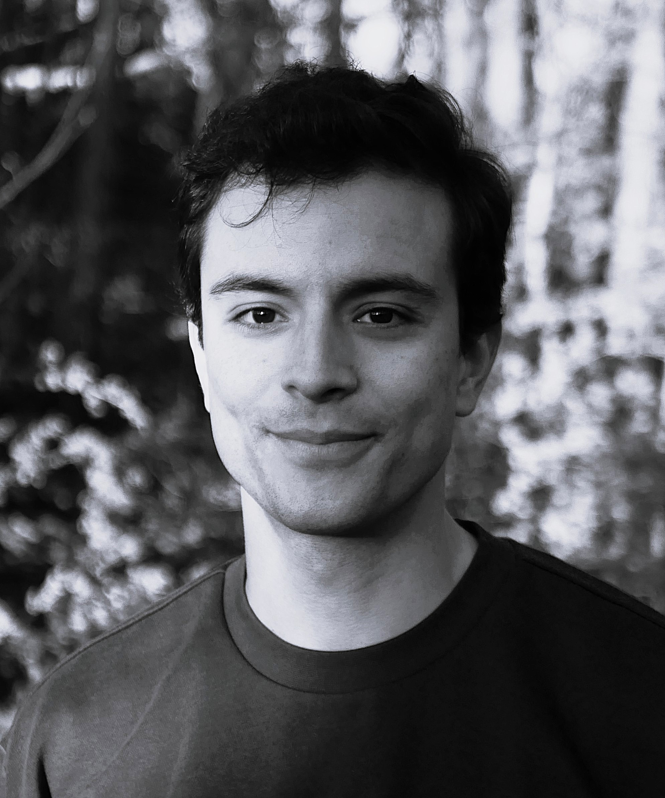

Hello, I'm Ismaël.
I'm a Machine Learning Engineer working at the intersection of software engineering, data science and artificial intelligence. I enjoy designing, building and deploying machine learning systems, with a particular interest in natural language processing.
Beyond work, I'm curious about technology in all its forms, passionate about sports and always looking for something new to learn, build or improve.

What I do
My work focuses on Machine Learning Engineering, from experimentation and model development to production deployment and maintenance. I particularly enjoy NLP, model evaluation, data pipelines and the engineering challenges involved in making AI systems reliable, efficient and useful in real-world applications.
I like working across the entire lifecycle of a machine learning project: understanding a problem, exploring solutions, writing maintainable code and turning prototypes into robust systems.
Beyond work
💻 Technology & Engineering
Linux, Python, open-source software, Docker, self-hosting, infrastructure and automation. I enjoy understanding how things work and building my own tools and systems.
🛠️ Personal Projects
Homelab experiments, automation, media libraries and software projects. A good excuse to learn something new and solve an interesting problem.
🏃 Sports & Performance
Sport is a big part of my life. From athletics and running to discovering other disciplines, I enjoy training, pushing my limits and exploring the science of performance.
📷 Photography
I love photography as both an artistic practice and a technical discipline. Composition, light, perspective, optics and image processing are all part of what makes capturing and creating an image so fascinating.
🎬 Cinema
A passion for cinema in all its forms, from discovering remarkable films to exploring the craft behind them.
Curiosity drives everything
Whether it's engineering a machine learning system, exploring a new technology, preparing for a sporting challenge or building something at home, I enjoy the process as much as the result. I'm always curious about what comes next.